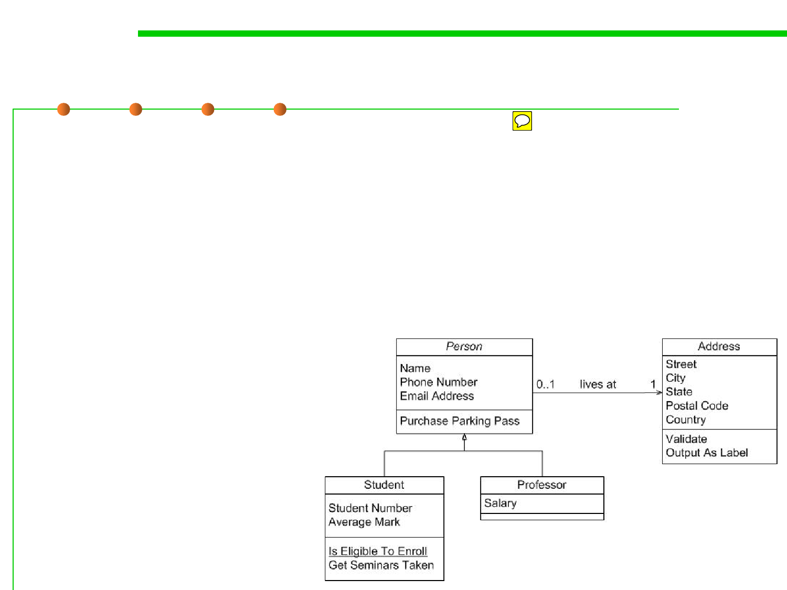

1.1 Multi-Dimensional Views of Software Construction
Semantics-oriented program structure
▪ E.g., using Class Diagram (UML) to describe the interfaces, classes,
attributes, methods, and relationships among them.
▪ Graphics-based or formally defined.
▪ Usually modeled in design phase, and transformed into source
code.
▪ It is the result of Object-Oriented Analysis and Design in terms of
user requirements.